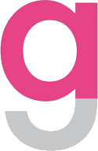

Utforska hur du ser på Gud, etik, människan och samhället.
Välj det alternativ som ligger närmast hur du själv tänker. Det finns inga rätt eller fel svar.
Beta-version
Resultatet är inte en vetenskaplig bedömning av dig som person. Se det som en utgångspunkt för reflektion och diskussion.
© Henrik Sjöqvist
Samhällsprogrammet, Alströmergymnasiet